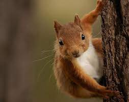

Descripción
Es una especie arborícola, que baja al suelo únicamente para buscar alimento, trasladarse de un
árbol a otro más distante o para beber. La ardilla es muy ágil, trepa fácilmente y a gran
velocidad a los árboles, dando grandes saltos de árbol en árbol. Posee además una vista
excepcional y sabe también bucear.

Cuidados
La ardilla es un animal omnívoro por lo que necesitará tener semillas y frutos secos a su alcance
para que coma cuando necesite. Para completar su dieta debes darle verduras frescas unas tres
veces por semana y también insectos de forma regular para un mayor aporte de proteínas. Puedes
darle de comer gusanos o grillos.